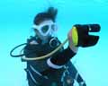
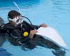
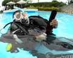

|
■プール実習とは／海洋実習に行く前に安全で穏やかな場所で水慣れを行なうセクションです。ダイビングで必要となる「スキル」を身につける機会でもあり、海洋実習をスムーズにするのも、Ｃカードを手にした後楽しいダイビングにするのも、スキル習得が重要です。そしてスキル習得のカギは、このプールダイブにあります。プールダイブで習うスキルにはひとつひとつ意味があり、習得する必要があるものばかりなのです。
■プール施設の概要／ダイビング専用プール（面積10ｍｘ25ｍ・最大深度5ｍ）更衣室・シャワー 関東エリアのパシフィカ各店は千葉県船橋市にあるペガサスダイビングプールを利用してプール実習を行っています。ここのダイビングプール関東地域では最大クラスでとても広く、また、最新式の浄化装置を備えていますので水質も抜群です。 ■スケジュール／午前9時・プール実習開始→午後4時終了（お昼休憩1時間）
ダイビングプールは関東最大級！のびのび練習できます！
実習開始から数時間後には水深5mの水中世界を体験！
|
| 器材のセッティング 器材の装着 器材の調節 |
【こんなふうに役立つ】 自分でスクーバ器材を組み立て、全器材を調整し装着できます。 |
|
| 水面でＢＣＤの空気の出し入れ | 【こんなふうに役立つ】 水面で浮力を確保することで安全性を高められ体力の温存にもなります。 |
|
| 水中での呼吸方法 | 【こんなふうに役立つ】 レギュレーターを使って口だけでゆっくり深く呼吸できることは基本です。 |
|
| レギュレーター・クリア | 【こんなふうに役立つ】 万一レギュレーターの中に水が入っても呼吸を再開できます。 |
|
| レギュレーター・リカバリー | 【こんなふうに役立つ】 口から外れたレギュレーターを簡単に探せて呼吸を再開できます。 |
|
| マスク・クリア | 【こんなふうに役立つ】 マスク内に入ってきた水を水面まで戻らずに抜くことができます。 |
|
 |
圧平衡と水中移動 | 【こんなふうに役立つ】 フィンに慣れることができ、耳の不快感をとり除くことができます。 |
| エアの管理 | 【こんなふうに役立つ】 残圧計を使ってタンクの空気をモニターでき、空気の残量がわかります。 |
|
|  | バックアップ空気源の使い方 | 【こんなふうに役立つ】 水面で浮力を確保することで安全性を高められ体力の温存にもなります。エア切れへの対応その1：バディから空気を分けてもらうことができます。 |
| ハンド・シグナル | 【こんなふうに役立つ】 水中でバディや他のダイバーとコミュニケーションをとることができます。 |
|
| 浮上の仕方 | 【こんなふうに役立つ】 浮上する際の手順を学ぶことで、正しい方法で安全に浮上できます。 |
| プレダイブ･セーフティ・チェック | 【こんなふうに役立つ】 ダイビング前にバディで器材をチェックでき、安全なダイビングを促進します。 |
|
| ディープ・ウォーター・エントリー | 【こんなふうに役立つ】 桟橋やボートなど水面まで距離のあるところから安全に水に入ることができます。 |
|
| スノーケル呼吸とブラスト・クリア | 【こんなふうに役立つ】 顔を水から上げずにスノーケルの中に入った水を出し、呼吸を再開できます。 |
|
| スノーケル／レギュレーター交換 | 【こんなふうに役立つ】 タンクの空気を節約でき、ダイビングをより長く楽しむことが可能になります。 |
|
| 潜降の仕方 | 【こんなふうに役立つ】 5つのポイントを使って、潜降する際の手順を学び正しく潜降できます。 |
|
| マスク脱着 | 【こんなふうに役立つ】 マスクが外れても落ち着いてつけ直すことができ、ダイビングを続けられます。 |
|
| マスクなし呼吸 | 【こんなふうに役立つ】 マスクが外れてもあわてずに対処でき、ダイビングを続けられます。 |
|
| 適正なウエイト量 | 【こんなふうに役立つ】 ウエイトの量を必要最小限に抑えることができ、体力の消耗を防ぎます。 |
|
| エア切れの練習 | 【こんなふうに役立つ】 エアがこない状態を体感することで、エア切れの緊急事態を防ぐことができます。 |
|
| 浮上の仕方 | 【こんなふうに役立つ】 5つのポイントを使って、浮上する際の手順を学び正しく浮上できます。 |
|
| 水面でウエイトの取り外し | 【こんなふうに役立つ】 緊急時に水面で浮力を確保することができ、溺れを防ぎます。 |
|
 |
ディープ・ウォーター・エキジット | 【こんなふうに役立つ】 桟橋やボートなど、水面から少し高いところへでも楽に上がることができます。 |
| 中性浮力 | 【こんなふうに役立つ】 水中で浮きも沈みもしない無重力のような状態をつくることができます。 |
|
| 中性浮力で泳ぐ | 【こんなふうに役立つ】 水中を疲れずに泳ぐことができ、水底の生物にダメージを与えません。 |
|
|  | 足がつったときの治し方 | 【こんなふうに役立つ】 万一水中や水面で足がつってしまっても、その場で治すことができます。 |
| 疲労ダイバー曳行 | 【こんなふうに役立つ】 疲れて泳げないダイバーを岸やボートまで連れて帰ることができます。 |
|
| エア切れとバックアップ空気源の使い方 | 【こんなふうに役立つ】 エア切れへの対応：バディでエア切れに適切に対処できます。 |
|
| フリーフローしているレギュレーターからの呼吸 | 【こんなふうに役立つ】 万一レギュレーターが動作不良になっても呼吸を続けることができます。 |
|
| コントロールされた緊急スイミング･アセント | 【こんなふうに役立つ】 エア切れへの対応：水中でエア切れになっても、水面まで安全に浮上できます。 |
| マスクなしで水中移動 | 【こんなふうに役立つ】 万一水中でマスクが外れても、落ち着いて水面まで戻ることができます。 |
|
| ホバリング | 【こんなふうに役立つ】 手や足をバタバタさせず、呼吸のコントロールだけで一定の深度を保ちます。 |
|
|  | 水面でスクーバユニットとウェイトの脱着 | 【こんなふうに役立つ】 水面で必要に応じてスクーバ・ユニットとウエイトの脱着ができます。 |
| 水中でスクーバユニットの脱着 | 【こんなふうに役立つ】 万一水中でスクーバ・ユニットの不具合が起こっても、対処することができます。 |
|
| 水中でウェイトの脱着 | 【こんなふうに役立つ】 万一水中でウエイトの不具合が起こっても、対処することができます。 |